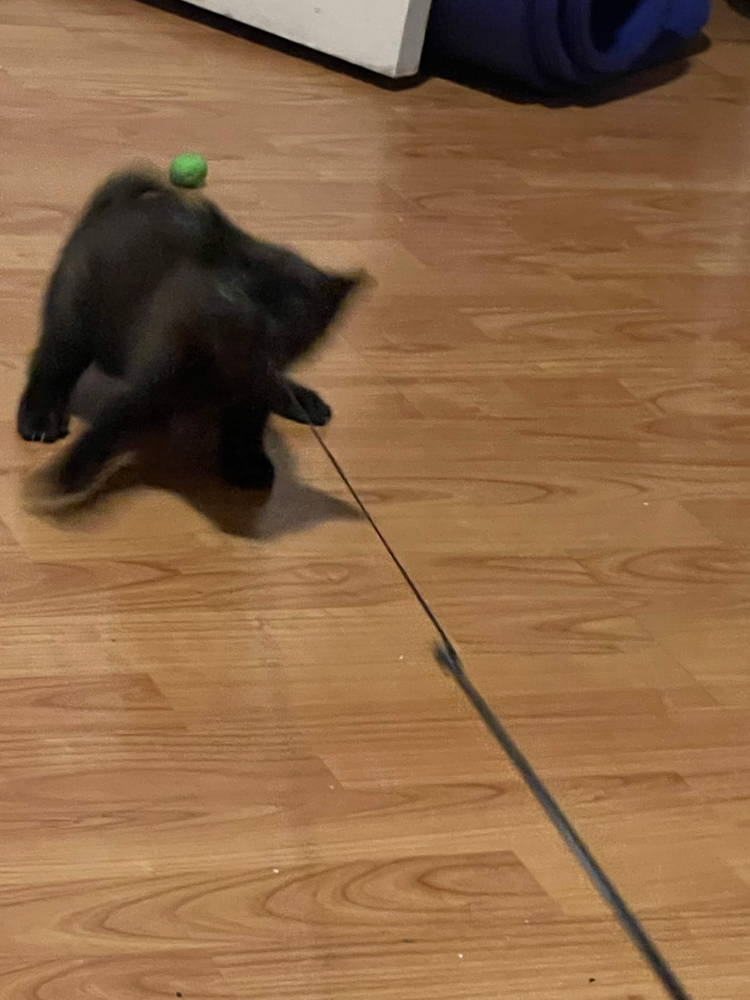
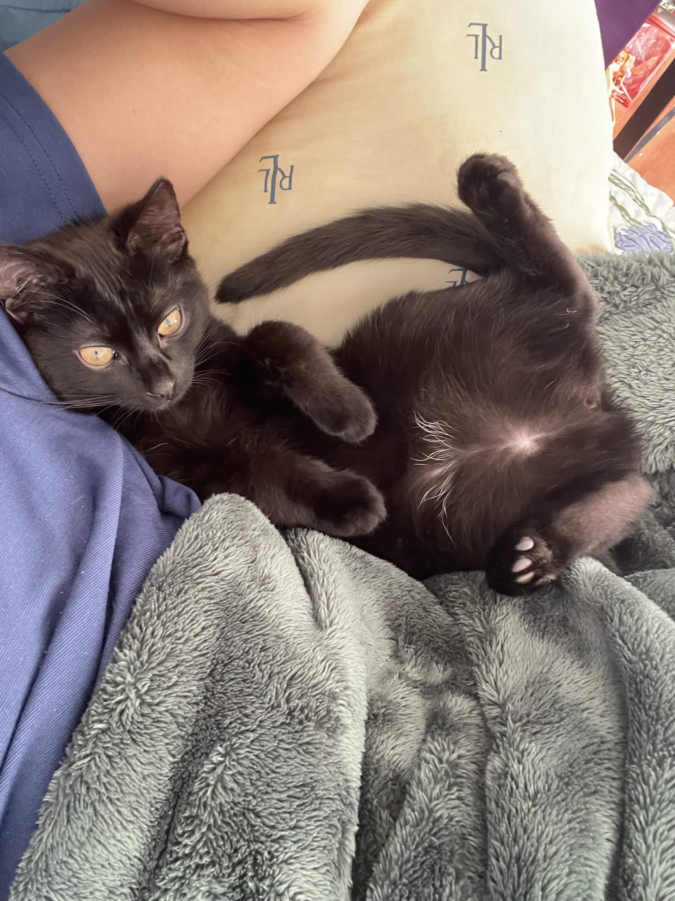
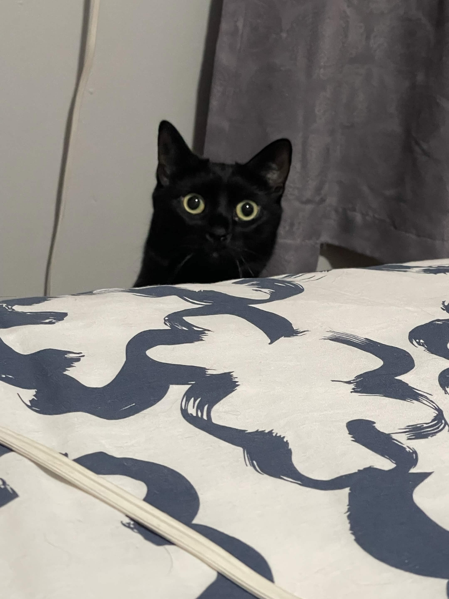

Right after my junior year of high school, my brother sent me a message saying he had found a tiny kitten abandoned behind a dumpster. She was extremely weak, malnourished, and covered in fleas. Seeing such a small kitten in that condition was heartbreaking, and we immediately knew we had to help her.
When he brought her home, my family and I decided to care for her the same way we once cared for Ace. We made sure she was fed properly, cleaned, and given a safe place to recover. Although she was small, she showed an incredible amount of strength and determination.
The first few weeks were especially difficult because she developed a severe case of worms that nearly took her life. There were moments where we truly feared she would not survive, but we continued doing everything we could to help her recover.
Thankfully, Spooky kept fighting. Little by little she became healthier, stronger, and more playful every day. Watching her transform from a fragile kitten into a happy, loving cat became one of the most rewarding experiences for my family. Today, she is an important part of our home and a reminder of how powerful love and care can be.
Spooky's Journey



“Sometimes the smallest survivors leave the biggest impact on our hearts.”